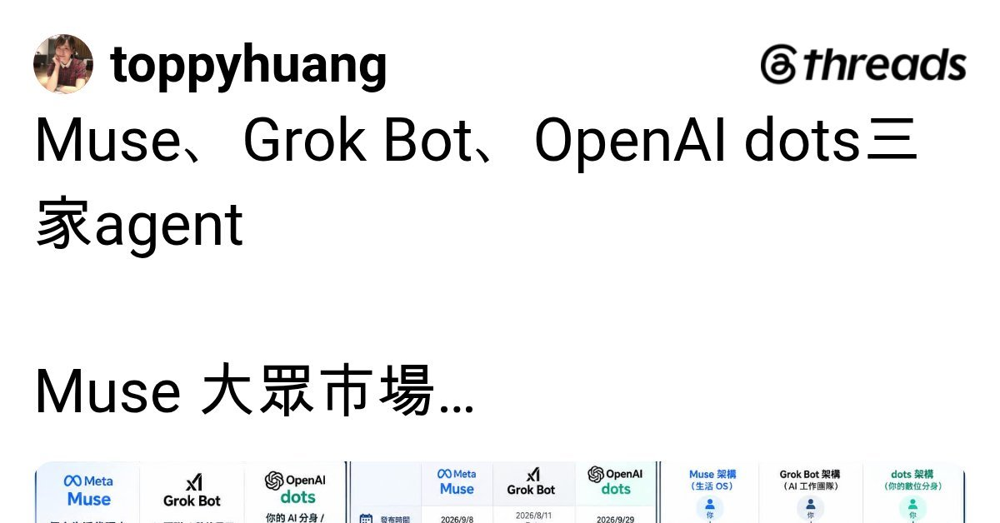

Threads｜Muse、Grok Bots 與「OpenAI dots」：Agent 比較貼文的可驗證邊界

一句話摘要
這篇貼文抓到 Agent 競爭將從「誰回答得更好」走向「誰能在受控環境中完成更多任務」；不過三家能力、名稱與整合清單的可驗證程度差異很大。使用前應先拆開看產品是否已正式發表、在哪個地區與帳號可用、哪些權限要交出去。
Threads 貼文的比較框架
作者將三者定位為：
- **Muse**：以 Meta 的大眾分發與免費入口為優勢，可處理購物、訂位、Email 與行程等日常任務；貼文同時提到其可能涉及 VM 中 Email、檔案資料的安全風險。
- **Grok Bot**：被描述為可由 Sales、Research、Engineering 等多個 Bot 分工、協作與排程的 AI workforce，偏向專業使用者。
- **「OpenAI dots」**：被描述為結合「GPT-6 Astra」、Cloud Computer、4,000+ Apps、長期記憶與主動研究，並串接 ChatGPT、Codex、Work、Slack、Teams 的方案。
最後作者以熱門餐廳訂位為例，期待 Muse 未來在台灣可協助搶訂餐廳，也提出一個很實際的問題：若所有人都使用同類代理，稀缺名額是否只會變成更快被搶完？
已可獨立確認：Muse 的產品底座
Meta 的公開產品與安全資料支持以下能力方向：
- Muse 被定位為能執行任務與專案的個人 AI Agent，而非僅聊天介面。
- 每位使用者可有持久、隔離的 Secure VM 與瀏覽器，供任務在受控雲端環境中處理。
- 使用者可決定連接哪些應用與授予何種存取範圍；高敏感行為的權限與確認機制是其安全設計重點。
- Meta 也明確討論 Agent 可能接觸不可信內容、遭提示注入或發生錯誤，因此採用隔離 runtime、憑證服務與 Sentinel 等防護層。
這些資料能支持「代理協助搜尋、填寫、協調與持續處理任務」的基本方向；但它不表示任何特定餐廳平台、地區、帳號都已支援自動訂位，更不代表成功率或公平性已有保證。
尚未確認，不宜當作產品事實的部分
本次以公開可取得的產品頁與搜尋結果交叉查找，未找到足以確認下列細節的一手公開規格：
- Grok 是否正式提供貼文所述、可任意配置為 Sales／Research／Engineering 並協作排程的「Grok Bots」產品。
- 「OpenAI dots」是否為 OpenAI 正式公開的產品名稱。
- 「GPT-6 Astra」、Cloud Computer、4,000+ Apps、長期 memory、主動研究，以及與 ChatGPT、Codex、Work、Slack、Teams 的整合是否為同一個已發表方案。
- Muse 已在台灣開放，或可對特定熱門餐廳完成自動訂位。
- 貼文所稱 Muse 的具體資安事件細節、影響範圍與修補狀態。
因此，上述內容保留為原作者的比較觀點與待查主張；不要因為比較圖就授予信箱、雲端硬碟、行事曆或付款資訊。
對「AI 搶訂位」更務實的判斷
### 1. 代理提高的是操作速度，不會增加名額
熱門餐廳的座位與放位規則仍是稀缺資源。若多數人都以同樣自動化方式競爭，優勢可能從「會不會操作」轉到平台的排隊政策、驗證機制、取消候補與反機器人規則。
### 2. 保留人類最終確認與預算邊界
訂位可先讓 Agent 蒐集條件、提醒開放時間、預填資料與提出候選選項；涉及信用卡、不可退款訂金、多人資料或取消規則時，保留使用者確認。不要把無上限預算或付款權限直接交給代理。
### 3. 用最小權限做產品試用
先以獨立帳號、非敏感行程、無付款權限進行測試。確認可用地區、連接器的資料範圍、任務紀錄、撤銷權限與錯誤復原方式後，再決定是否擴大使用。
### 4. 比較產品時看「可驗證任務」，不要只看清單
評估 Agent 時，建議逐項詢問：它是否能在自己的帳號與地區完成任務？需要哪些 connector？何時要求確認？失敗時會做什麼？能否看到執行紀錄並隨時停止？這比單看「支援幾千個 App」更接近真正可用性。
與既有 Muse 歸檔的關聯
此前歸檔已討論 Muse 可能改變旅遊與電商的「第一入口」，以及它將內容轉成不同 artifact 的應用。這篇比較文補上另一個必要視角：Agent 的功能宣傳常把正式功能、內測體驗、推測規格與未證實事件混在一起。做決策時，必須把官方證據、作者體驗與市場想像拆開處理。
原始與查核連結
- Threads 原貼文：https://www.threads.com/@toppyhuang/post/Dd_BVm8kxfj
- Muse 官方首頁：https://muse.ai
- Meta：How We Designed Muse：https://introducing.muse.ai
- Meta AI Research：How We Built Safety Into Muse：https://research.meta.ai/blog/security-and-safety-for-ai-agents-our-approach-with-muse
- 延伸閱讀：[Meta Muse 與入口遷移](/articles/2026-10-01-threads-meta-muse-agent-platform-disintermediation.html)
- 延伸閱讀：[Meta Muse 文章轉雙人 Podcast](/articles/2026-10-02-threads-meta-muse-article-to-podcast.html)